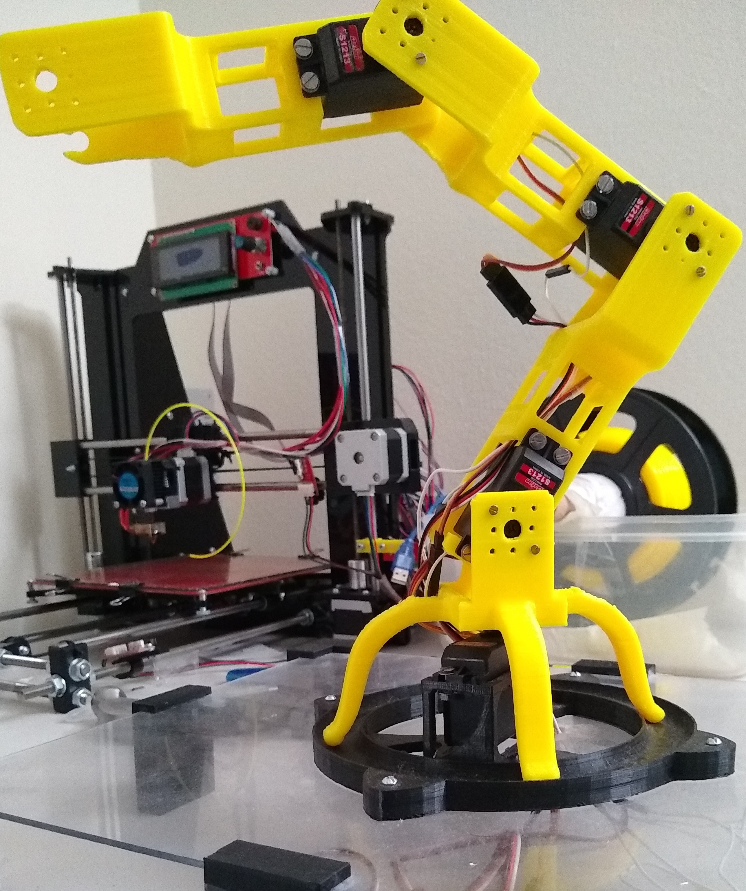
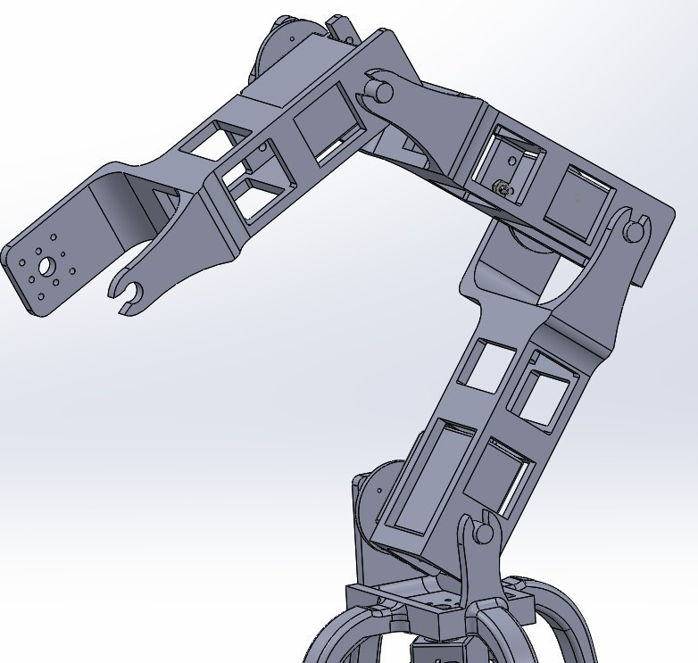

4-DOF Robotic Arm


Designed, 3D printed, and controlled a 4-DOF robotic arm. This project involved:
- Utilizing Adafruit servo motors for precise joint control.
- Implementing forward and inverse kinematics using Denavit-Hartenberg parameters for accurate positioning.
- Developing a PID controller to provide accurate and stable position control, ensuring smooth and responsive movements.
- Controlling the arm via a Raspberry Pi, enabling flexibility and extensibility of the control system using I2C communication.
Code is available here.
Technologies Used: 3D Printing, Raspberry Pi, Python, I2C, PID control, Adafruit Servo Motors, Denavit-Hartenberg Parameters
Project Type: Personal Project (Building upon knowledge from University of Michigan ROB 550)
Back to Projects